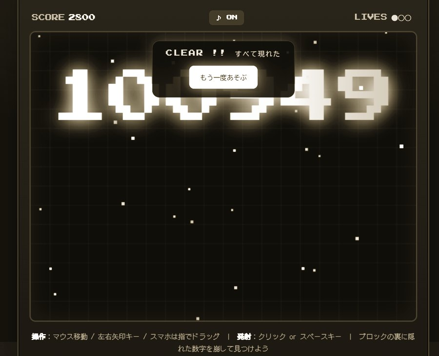
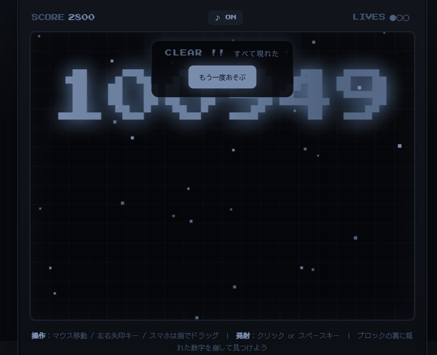
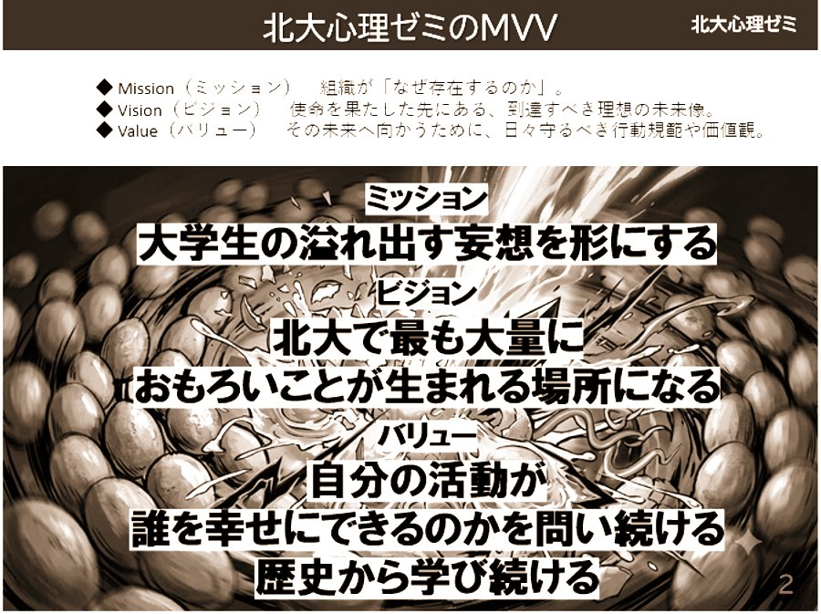
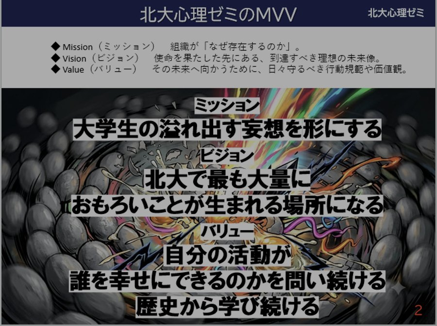

DECISION
上のボタンで、サイト全体の写真の出かたを切り替えて見比べられます。 写真以外（色・余白・角丸・書体）は本番と同じ値です。差が出ているのは写真の加工だけです。
言葉もてあそ部が投稿したものです。どちらも「写真」ではなく、文字の入った画面キャプチャでした。
6-5 が想定していたのは「学生がスマホで撮った写真」です。実際に最初に入ってきたのは、 ゲーム画面のキャプチャとスライドのキャプチャでした。 白黒にして朱を重ねると、文字と背景の差が潰れて読めなくなります。 A と C を切り替えて、数字「100949」と「大学生の溢れ出す妄想を形にする」の読めかたを見比べてください。
⚠ 下の6枚のうち4枚は、上の2枚の明るさ・色味だけを機械的に変えた見本です。 本物のスマホ写真ではありません。実物が2枚しかないため、 6-5 が想定した「明るさも色もバラバラ」の状況を再現しています。 ばらつきの度合いは、実際の投稿とは違う可能性があります。
A では6枚が同じトーンに揃います。C では揃いません。これが、朱をやめると失われるものです。




切り替えではなく、同じ画面に3つ並べたものです。
| A 現状 | B 白黒のみ | C 加工なし | |
|---|---|---|---|
| 写真のばらつき | ほぼ消える | ほぼ消える | そのまま出る |
| 文字入りキャプチャ | 読めない | 読みにくい | 読める |
| 作品の色 | 変わる（6-5・work.module.css が禁じている） | 変わる | 正しく出る |
| ホバーで色が戻る仕掛け | ある | ある | 無くなる |
| サイト全体の統一感 | 強い | やや強い | 写真しだい |
| 朱の使いどころ | 写真・見出し・ボタン | 見出し・ボタン | 見出し・ボタン |
⚠ 本物のスマホ写真が、まだ1枚も投稿されていません。 6-5 が守ろうとした「明るさも色もバラバラなスマホ写真」が実際にどれくらいばらつくのかは、 この時点では確かめようがありません。上の2章は、同じ画像を機械的に加工した見本にすぎません。 作品が数点そろってから、この画面をもう一度開いて決め直すこともできます。